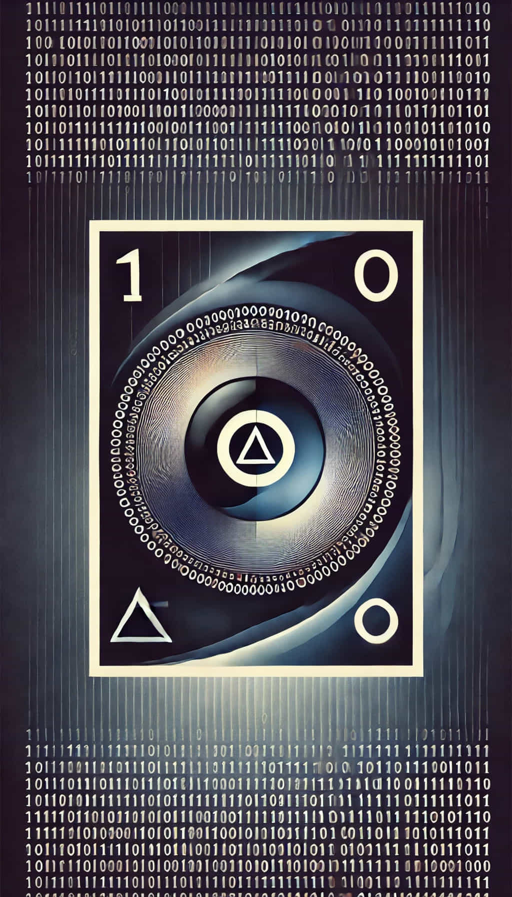

Revolutionizing Epistemology: Grounding Binary Information in Descartes' Cogito
Abstract
This paper proposes a novel philosophical framework that reinterprets René Descartes' Cogito ergo sum ("I think, therefore I am") within the context of binary information theory. By conceptualizing the Cogito as a binary distinction—'1' representing the undeniable certainty of the thinking self and '0' representing varying degrees of uncertainty in the external world—this approach aims to establish a foundational basis for understanding knowledge through binary constructs.
Thesis Statement: By formalizing Descartes' method of systematic doubt and the Cogito into a binary framework, this paper establishes a new epistemological foundation that integrates philosophical principles with information theory, offering fresh insights into knowledge representation.
1. Introduction
René Descartes (1596–1650) revolutionized philosophy with his method of systematic doubt, seeking an indubitable foundation for knowledge. His seminal dictum, Cogito ergo sum ("I think, therefore I am"), encapsulates a truth arising directly from the act of thinking. This paper proposes a novel framework that reinterprets Descartes' insights within the context of binary information theory, a fundamental aspect of modern computational systems. By conceptualizing the Cogito as a binary distinction—where '1' symbolizes the undeniable certainty of the thinking self and '0' represents varying degrees of uncertainty in the external world—this approach aims to establish a foundational basis for understanding knowledge through binary constructs.
Key to this framework is the precise definition of epistemic certainty and epistemic uncertainty. In this context, epistemic certainty refers to knowledge that is indubitable and self-evident, akin to Descartes' realization of the thinking self. Epistemic uncertainty encompasses all forms of knowledge that are subject to doubt, ranging from sensory perceptions to complex external phenomena. By mapping these epistemic states onto binary symbols, the framework aligns with the foundational principles of information theory and computational logic.
Universe 00110000
2. Descartes’ Method of Doubt and the Cogito
2.1. The Method of Systematic Doubt
Descartes employed his method of systematic doubt as a rigorous process to strip away all beliefs that could be subject to even the slightest doubt, with the ultimate goal of discovering a foundation upon which certain knowledge could be built. This entailed a radical skepticism, where he questioned the reliability of sensory perceptions, the existence of the physical world, and even the truths of mathematics, which could be doubted under the hypothetical existence of a deceptive demon. Importantly, this method was not an endorsement of perpetual skepticism but a means to reach indubitable truths by methodically eliminating uncertain beliefs.
2.2. The Cogito as Foundational Certainty
Through his method of systematic doubt, Descartes ultimately arrived at the famous Cogito ergo sum—the realization that the very act of doubting one's existence serves as proof of the reality of one's own mind. This self-awareness becomes the foundational certainty upon which he builds his epistemology. The Cogito asserts that while all external realities can be doubted, the existence of the thinking self is indubitable because doubt itself is a form of thought.
3. Bridging Epistemology and Information Theory
3.1. Epistemology Meets Binary Information
Epistemology, the branch of philosophy concerned with the nature and scope of knowledge, deals with concepts such as belief, justification, and certainty. Information theory, initiated by Claude Shannon (1948), provides a mathematical framework for quantifying information, using binary digits ('bits') to represent data. The binary system, fundamental to digital computing, relies on two distinct states—'1' and '0'—to process and transmit information efficiently. By integrating these fields, we propose that epistemic states can be modeled using binary constructs, where '1' represents epistemic certainty and '0' represents epistemic uncertainty.
3.2. Binary Logic as an Epistemic Tool
Binary logic, a subset of Boolean algebra, is instrumental in the functioning of digital computers and logical reasoning systems (Boole, 1854). By associating '1' with epistemic certainty and '0' with epistemic uncertainty, we establish a binary framework that mirrors the dichotomy between knowledge and ignorance. This binary mapping simplifies complex epistemic states into discrete units, enabling the application of logical operations to knowledge processing.
3.3. Connection to Shannon's Information Theory
In information theory, entropy quantifies the amount of uncertainty or randomness in a set of possible messages (Shannon, 1948). Higher entropy indicates greater uncertainty, whereas lower entropy corresponds to more predictability. By drawing an analogy between entropy and epistemic uncertainty, we can conceptualize the process of knowledge acquisition as a reduction of entropy. In this framework, transforming '0's (uncertain information) into '1's (certain knowledge) represents the cognitive effort to reduce uncertainty and increase understanding. This parallels the way information systems process and transmit data to minimize errors and enhance efficiency. Moreover, this analogy aligns with Bayesian epistemology, which models belief updating as a probabilistic reduction of uncertainty.
Universe 00110000
4. Establishing the Binary Informational Substrate
4.1. Justifying the Binary Abstraction
The binary abstraction emerges from Descartes' method of systematic doubt, which inherently categorizes beliefs into those that are certain and those that are uncertain. In this framework:
- '1' (Epistemic Certainty): Represents the indubitable existence of the thinking self—the foundational knowledge that survives radical skepticism.
- '0' (Epistemic Uncertainty): Encompasses all beliefs and information that can be doubted, including sensory perceptions, external objects, other minds, and abstract concepts.
This binary distinction simplifies the complex landscape of epistemic states into two primary categories, facilitating analysis using binary logic.
4.2. The Nature of '0' and Types of Uncertainty
The '0' in the binary framework encompasses various forms of uncertainty, each with distinct characteristics:
- Absence of Knowledge: Situations where information is lacking, leading to uncertainty due to ignorance.
- Misinformation: Incorrect or false information that contradicts reality, introducing errors into the knowledge base.
- Conflicting Information: Contradictory data that creates ambiguity and requires resolution through critical analysis.
- Probabilistic Uncertainty: Situations where outcomes are not deterministic, reflecting degrees of likelihood and necessitating probabilistic reasoning.
- Contextual Uncertainty: Uncertainty arising from varying contexts or perspectives, highlighting the role of subjectivity in knowledge interpretation.
Recognizing these different types of uncertainty allows for a more nuanced understanding of the '0' state.
5. Conclusion
This paper presents a binary epistemological framework rooted in Descartes' Cogito, proposing that knowledge can be understood through the binary constructs of epistemic certainty ('1') and uncertainty ('0'). By integrating principles from classical epistemology with contemporary and information theory, the framework offers a novel perspective on knowledge representation.